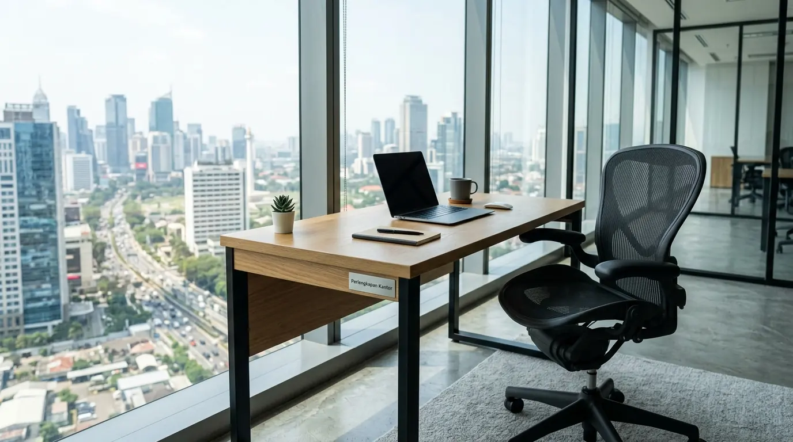

Mengapa Membeli Paket Hemat Meja Kursi Belajar Kerja Lebih Menguntungkan Perusahaan?
Membeli paket hemat meja kursi belajar kerja lebih menguntungkan karena memangkas biaya pengadaan, menjamin keselarasan estetika, dan memastikan proporsi ergonomis ideal.
Memilih paket perabot berdesain terpadu memberikan kepastian bahwa seluruh inventaris di dalam ruangan memiliki standar kualitas dan tampilan visual yang seragam. Langkah ini sangat memudahkan tim manajemen operasional dalam menata layout area kerja tanpa harus mencocokkan berbagai varian produk secara terpisah.
Pengadaan perabot kerja secara terpisah sering kali menimbulkan ketidakcocokan tinggi antara permukaan meja dengan dudukan kursi, yang pada akhirnya memicu kelelahan fisik pekerja. Berdasarkan Data Survei Pengadaan Fasilitas Perkantoran Indonesia 2025-2026, lebih dari 62 persen perusahaan efisien berhasil menghemat anggaran operasional awal hingga 28,5 persen dengan mengadopsi sistem paket bundling furniture.
Selain itu, Laporan Riset Ergonomi Ruang Kerja 2026 mengungkapkan bahwa keselarasan dimensi meja dan kursi bawaan pabrik meningkatkan kenyamanan duduk hingga 45 persen.
Menciptakan ruang kerja atau ruang belajar yang produktif sangat bergantung pada pemilihan perabot yang tepat dan terjangkau. Selain memastikan fasilitas fisik tertata dengan rapi, melengkapi ruang operasional dengan sarana pendukung berkualitas merupakan investasi jangka panjang bagi instansi.
Bagi Anda yang sedang merencanakan efisiensi tata ruang atau peremajaan fasilitas, hubungi kami untuk mendapatkan penawaran bundling perabot dan paket Perlengkapan Kantor grosir terbaik.
- Bundling perabot dapat menghemat biaya pengadaan hingga 30% dibanding pembelian terpisah.
- Keseragaman desain menciptakan citra profesional yang kuat di mata klien dan pengunjung.
- Paket bundling biasanya sudah termasuk garansi yang lebih komprehensif.
Apa Saja Fitur Utama Set Meja dan Kursi Kerja Minimalis Berkualitas?
Fitur utama set meja dan kursi kerja minimalis berkualitas mencakup rangka besi kokoh, permukaan meja tahan gores, serta kursi bersandaran ergonomis.

Set meja dan kursi kerja minimalis dengan rangka besi powder coating dan permukaan meja MDF melamin — desain hemat tempat untuk ruang kerja modern.
Berikut adalah kriteria teknis utama yang wajib diperhatikan saat memilih set perabot belajar dan kerja:
- Rangka Besi Hollow Powder Coating — Menyediakan daya tumpu beban yang kuat dan tahan karat untuk penggunaan intensif harian.
- Top Table Papan MDF Lapis Melamin — Permukaan meja halus, mudah dibersihkan dari tumpahan cairan, dan tahan terhadap goresan benda tumpul.
- Sandaran Kursi Menopang Lumbar — Desain kurva sandaran mengikuti bentuk alami tulang punggung untuk mencegah rasa pegal saat bekerja lama.
- Sistem Manajemen Kabel Built-in — Fitur lubang kabel (grommet) pada meja untuk menjaga kerapian kabel laptop, lampu belajar, atau colokan listrik.
- Kaki Meja Pengatur Ketinggian — Komponen leveling pad di bagian bawah kaki meja guna menjaga stabilitas di atas lantai yang tidak rata.
- Pastikan ketebalan papan meja minimal 15 mm untuk daya tahan optimal.
- Pilih kursi dengan busa kepadatan tinggi (high-density foam) agar tidak kempes.
- Periksa finishing powder coating pada rangka besi agar tidak mudah berkarat.
Bagaimana Cara Kerja Keselarasan Dimensi Meja dan Kursi dalam Mencegah Kelelahan?
Cara kerja keselarasan dimensi meja dan kursi adalah menjaga jarak ideal antara paha, dudukan, dan permukaan meja agar postur tubuh tetap netral.
Set paket perabot dirancang khusus oleh manufaktur dengan mengacu pada standar antropometri tubuh manusia. Ketinggian meja standar sekitar 73 hingga 75 sentimeter dipadukan secara presisi dengan kursi bertinggi dudukan 42 hingga 45 sentimeter.
Kombinasi ukuran yang pas ini memungkinkan pengguna mengetik di komputer atau menulis dokumen tanpa harus membungkukkan bahu atau mengangkat siku secara berlebihan.
Menggunakan perabot dengan dimensi yang tersinkronisasi meningkatkan fokus dan stamina kerja harian karyawan. Untuk melengkapi kenyamanan ruang kerja perusahaan Anda secara menyeluruh, pastikan seluruh kebutuhan sarana kerja didapatkan dari distributor Perlengkapan Kantor terpercaya.
- Tinggi meja: 73–75 cm (standar ergonomis universal).
- Tinggi dudukan kursi: 42–45 cm (dengan kaki rata di lantai).
- Jarak pandang ke monitor: 50–70 cm untuk mengurangi ketegangan leher.
Apa Saja Kesalahan Umum Saat Membeli Set Meja dan Kursi Kerja Murah?
Kesalahan umum saat membeli set meja dan kursi kerja murah adalah mengabaikan ketebalan papan kayu serta memilih rangka logam yang terlalu tipis.
Banyak pembeli tergiur oleh tawaran harga sangat murah tanpa memeriksa spesifikasi ketebalan material papan meja (top table). Papan kayu yang terlalu tipis di bawah 12 milimeter mudah melengkung saat menahan beban komputer atau tumpukan berkas. Selain itu, membeli kursi tanpa lapisan busa yang memadai dapat menimbulkan ketidaknyamanan berlebih saat duduk selama bertugas.
- ❌ Membeli hanya berdasarkan harga termurah tanpa mengecek spesifikasi material.
- ❌ Mengabaikan ketebalan papan meja (minimal 15 mm untuk penggunaan berat).
- ❌ Tidak memperhatikan kualitas roda atau footing pada kursi.
- ❌ Melupakan garansi produk dan ketersediaan suku cadang.
Bagaimana Tips Merawat Set Meja dan Kursi Belajar Kerja Agar Tahan Lama?
Tips merawat set meja dan kursi belajar kerja adalah rutin membersihkan debu, menghindari paparan air tergenang, serta mengencangkan baut rangka secara berkala.
Lap permukaan meja kayu menggunakan kain setengah basah secara rutin untuk menghilangkan debu dan noda bekas jari. Jika terjadi tumpahan air, segera seka hingga kering agar lapisan tepi papan (edging) tidak melapuk. Lakukan pemeriksaan baut sambungan rangka besi setiap enam bulan sekali dan kencangkan baut yang longgar agar struktur perabot tetap stabil dan kokoh.
- 1. Bersihkan debu dengan kain microfiber setiap hari.
- 2. Gunakan cairan pembersih khusus kayu untuk noda membandel.
- 3. Periksa dan kencangkan baut rangka setiap 6 bulan.
- 4. Hindari sinar matahari langsung berlebihan pada permukaan meja.
Pertanyaan Populer Seputar Paket Meja Kursi Kerja (FAQ)
Kesimpulan Praktis
Keputusan memilih paket hemat meja kursi belajar kerja minimalis murah merupakan langkah cerdas untuk menghadirkan sarana kerja yang fungsional, rapi, dan nyaman tanpa menguras anggaran. Dengan struktur rangka yang kokoh, dimensi yang selaras, serta desain hemat tempat, produktivitas kerja dan belajar dapat meningkat secara signifikan.
Lengkapi keandalan fasilitas ruang kerja Anda sekarang dengan memesan set perabot dan paket Perlengkapan Kantor eksklusif dari toko online terpercaya kami!